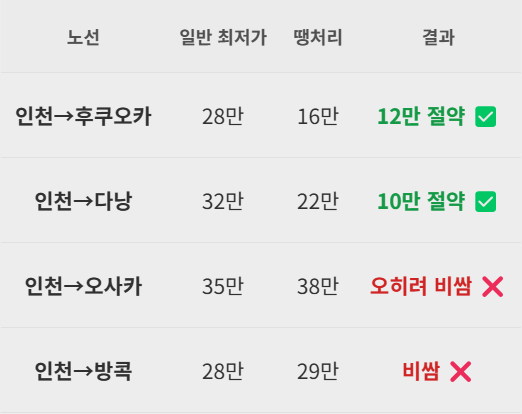

땡처리 항공권이
오히려 더 비쌀 수도 있다? ✈️
안녕하세요, 티키티킷입니다.
"땡처리 항공권 = 무조건 싼 항공권"
이렇게 생각하시는 분, 꽤 많으시죠?
결론부터 말씀드리면,
아닙니다.
땡처리도 비싼 땡처리가 있습니다.
🤔 먼저, 땡처리 항공권이란?
여행사가 패키지 상품용으로 대량 구매한 좌석 중
출발 임박까지 팔리지 않은 잔여석을 할인해서 푸는 겁니다.
비행기가 뜨는 순간 그 좌석은 사라지니까,
여행사 입장에서는 싸게라도 파는 게 이득이죠.
그래서 일반 예매보다 훨씬 싸게 나오는 경우가 분명히 있습니다.
근데 항상 그렇진 않습니다.
⚠️ 땡처리가 오히려 비싼 3가지 경우
1️⃣ "땡처리"라는 이름만 붙인 경우
가장 흔함
솔직히 말하면, "땡처리"라는 단어 자체가 마케팅 용어에 가깝습니다.
여행사 입장에서 "땡처리"라고 써놓으면 클릭률이 올라가니까,
실질적 할인 없이 이름만 붙이는 경우가 있습니다.
실제로 같은 날짜, 같은 노선을 비교해보면 이렇습니다.

*가격은 조회 시점에 따라 달라집니다
이름은 "땡처리"인데, 비교해보면 더 비싼 경우가 있습니다.
2️⃣ 성수기에 올라온 땡처리
시즌 함정
벚꽃 시즌, 여름 휴가철, 추석·설 연휴 —
이런 성수기에는 정상가 자체가 높습니다.
여기서 30% 할인해봤자,
비수기 정상가보다 비싼 경우가 많아요.
💡 예시
오사카 왕복 정상가
· 비수기(1월): 18만원
· 성수기(벚꽃 4월 초): 45만원
성수기 "땡처리" 30% 할인 → 약 32만원
비수기 정상가보다 14만원이나 더 비쌉니다.
3️⃣ 출발일이 아직 멀어서 가격을 안 내린 경우
임박 전 함정
땡처리는 원래 출발일이 임박해야 가격이 내려갑니다.
그런데 출발일이 2~3주 이상 남은 항공권도
"땡처리"라는 이름으로 올라오는 경우가 있습니다.
날짜가 남아 있으면 정상가로 팔릴 가능성이 있으니까,
여행사 입장에서는 굳이 가격을 내릴 이유가 없습니다.
진짜 땡처리다운 가격은
보통 출발 1~2주 전에 나옵니다.
✅ 이렇게 비교하면 됩니다
티키티킷은 국내 여행사들의 땡처리 항공권을 모아서 보여줍니다.
각 항공권 옆에 "네이버 최저가 비교" 버튼이 있어서,
진짜 싼 건지 한 번에 확인됩니다.
#땡처리항공권 #특가항공권 #항공권싸게사는법 #항공권가격비교 #항공권최저가 #해외여행꿀팁 #땡처리주의사항 #항공권팁 #여행준비 #티키티킷